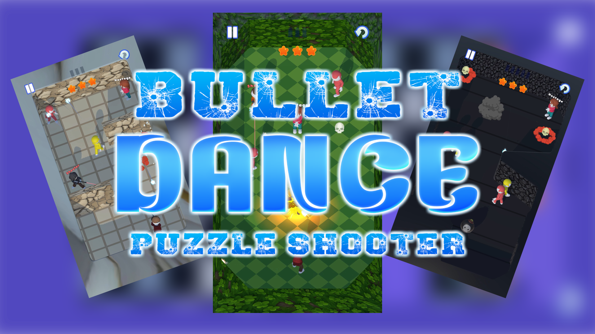
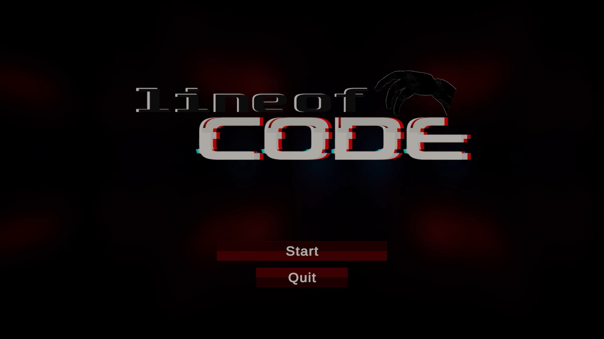
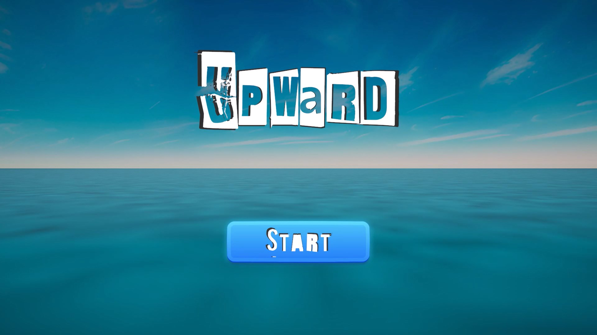

Featured
Arcade Racing
Half Shift
A high-speed arcade racer built around hard braking, tighter lines, and that split second where a risky turn becomes the perfect one.
A focused slate of action-driven projects built around movement, readability, and strong player response. Each game is designed to be picked up fast and understood through play.
A high-speed arcade racer built around hard braking, tighter lines, and that split second where a risky turn becomes the perfect one.

A puzzle shooter where every shot matters. Rescue hostages, plan your angles, and solve each room with the fewest bullets possible.

A visual novel about a protagonist who begins to notice the seams of their world and pushes deeper into a simulation that does not want to be understood.

A fast puzzle platformer about learning the route, cutting mistakes, and finishing each level in the best time with the fewest attempts.